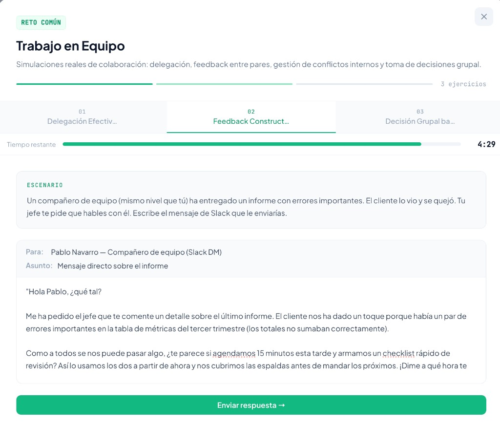
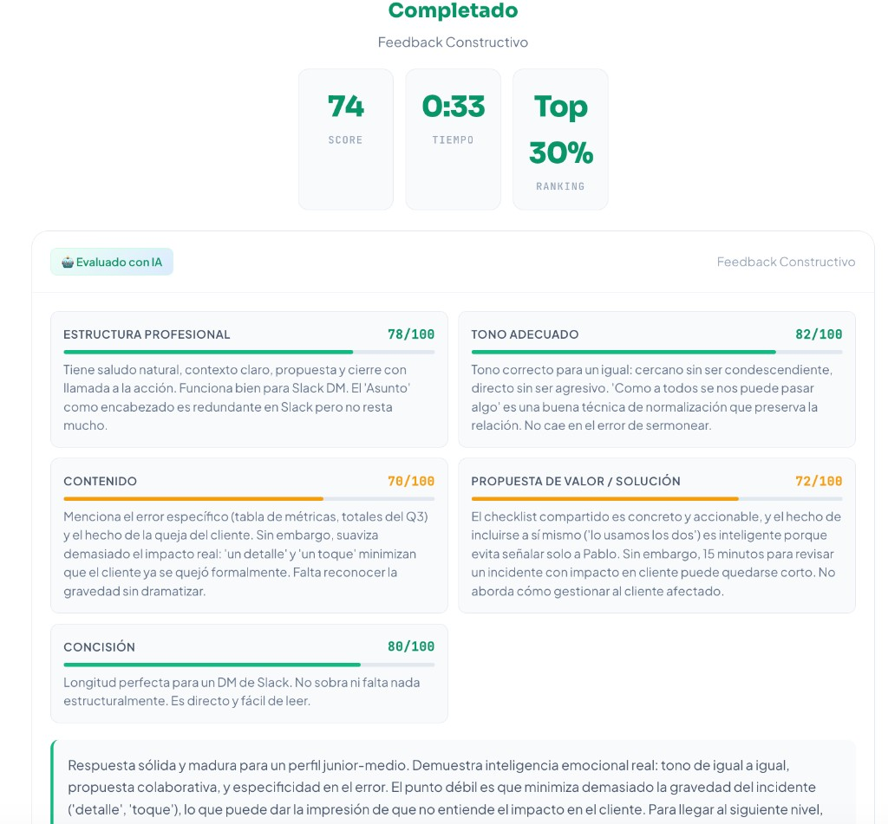

Marketplace europeo de talento anónimo: la habilidad se demuestra con retos evaluados por IA y se sella como credencial verificable en blockchain.
Un documento que el candidato escribe sobre sí mismo y que nadie verifica decide quién pasa a la primera entrevista.
56 candidatos por vacante. Las empresas no necesitan más CVs: necesitan una señal auditable de capacidad.
Hasta hace poco un ordenador solo podía corregir un test de opción múltiple. Hoy un modelo lee una respuesta escrita, la juzga contra unos criterios y explica la nota — por menos de 2 céntimos.
Clasifica la contratación asistida por IA como alto riesgo y exige que sea auditable, explicable y no discriminatoria.
W3C Verifiable Credentials, eIDAS 2.0 y la EU Digital Identity Wallet mueven el mercado hacia títulos que el individuo posee y cualquiera comprueba.
Tres piezas que solo tienen sentido juntas: evaluación por IA, anonimato estructural y una credencial que el candidato posee.
El candidato resuelve situaciones laborales reales. Un agente evaluador devuelve un Skill Score de 0 a 100 con feedback criterio a criterio, no una nota opaca.
La empresa ve skills, puntuaciones y sector. Nunca nombre, edad, género ni foto. El anonimato es a la vez propuesta de valor y control anti-sesgo.
El resultado se sella en blockchain. Cualquiera lo comprueba en segundos, sin cuenta en TalentPact. Es una prueba de integridad, no una moneda.
Unas plataformas te dicen quién existe; otras evalúan a quien ya has encontrado. Nadie hace las dos, y esa separación es la ineficiencia sobre la que nos construimos.
| Plataforma | Aporta candidatos | Evalúa | Anónimo | Portable | Precio |
|---|---|---|---|---|---|
| LinkedIn Recruiter | Sí | No evalúa | — | — | 170-900 $/mes |
| HackerRank · Codility | — | Solo código | — | — | desde ~100 $/mes |
| TestGorilla | — | Tests genéricos | — | — | entrada baja |
| CodeSignal | — | Sí, corporativo | — | — | > 6.000 $/año |
| TalentPact | Sí | Multi-dominio | Sí | Sí | 49 € por resultado |
Copiar el anonimato obliga a un competidor de sourcing a dejar de enseñar el activo que vende. Y la credencial verificable no es una función, es un protocolo: exige criptografía y cumplimiento, que no es el perfil de estas empresas.
Cobrar por resultado es nuestra mejor arma comercial y la más frágil: cualquiera puede cambiar su tarifa si empieza a perder cuentas. No lo presentamos como una barrera de entrada, porque no lo es.
Todo el modelo de negocio descansa en una pregunta: ¿puede una IA evaluar talento de forma justa, barata y auditable?
Un ejercicio de Python y una negociación no se parecen en nada. Construir un corrector para cada uno sería inviable. Repartimos el trabajo en cuatro papeles, y el que corrige es uno solo.
Lee la oferta de empleo y deduce qué habilidades hay que medir.
Escribe el reto y, sobre todo, la plantilla de corrección: qué se valora y cuánto pesa cada cosa.
Recoge la respuesta del candidato y cómo la ha escrito.
Lee la respuesta, la contrasta con esa plantilla y pone la nota explicando cada criterio.
Los tres primeros son el diseño objetivo. El cuarto es el que funciona hoy y el que produce el valor del negocio: la nota que la empresa acaba pagando.
El programa no sabe nada de finanzas ni de Python. Lo que hay que saber para corregir le llega como dato en cada evaluación: el enunciado, los criterios y cuánto pesa cada uno.
Junto con la respuesta del candidato entra la plantilla de corrección de ese reto concreto.
Tiene que escribir, criterio por criterio, qué encuentra en la respuesta y qué falta. Solo después pone la nota.
Una nota por criterio con su justificación. La final es la suma ponderada, no una impresión general.
Añadir un reto es añadir un dato. No hay un modelo por oficio ni se reprograma el motor.
Cinco indicadores en verde, uno fuera de objetivo y uno todavía sin medir. Son ejecuciones reales del motor, no estimaciones.
| Indicador | Objetivo | Conseguido | Estado |
|---|---|---|---|
| Coste por evaluación | < 0,04 € | 0,0165 € | PoC · producto ~0,013 € |
| Capacidad de discriminación | > 40 pts | 87 pts | 96 vs 9 · PoC |
| Tasa de rechazo del modelo | < 5 % | 0 % | 0/4 evaluaciones |
| Ataques de inyección bloqueados | ensayados | 2 / 2 | No es una tasa de producción |
| Tests automáticos del motor | — | 84 casos | npm test · sin claves ni red |
| Latencia extremo a extremo | < 12 s | 17–20 s | Fuera de objetivo — falta streaming |
| Concordancia con evaluador humano | κ ≥ 0,65 | — | Protocolo construido · faltan las notas humanas |
Margen sobre el precio: tres ejercicios por candidato cuestan 5 céntimos de IA frente a los 49 € que paga la empresa. La partida de IA no condiciona el negocio ni a gran escala.
Enseñar una corrección que salió bien no demuestra nada. Estas son las dos comprobaciones que corren solas, con un comando, cada vez que tocamos el código.
Vigilan las reglas que el motor nunca puede romper: que la nota vaya de 0 a 100, que un criterio sin nota cuente como cero y no como aprobado, y que lo que escribe el candidato jamás se lea como una orden. Tardan dos décimas de segundo y no cuestan un céntimo.
Escribimos doce respuestas de calidad ya conocida, de excelente a pésima, y tres formas distintas de intentar engañar al corrector. El sistema las corrige a ciegas y nos dice cuánto se aleja de la nota que debía sacar.
La web no tenía fijada la temperatura: prometíamos que la misma respuesta saca la misma nota y no era cierto. Y el coste se calculaba en dólares y se mostraba en euros, un 8 % de más. Los dos, corregidos y con una prueba que impide que vuelvan.
La IA produce una evidencia inspeccionable. La cadena prueba que ese documento no se ha tocado. Son dos problemas distintos; el máster exige los dos.
No guardamos el currículum en la cadena y no emitimos ninguna moneda. La usamos para una sola cosa, la única que hace mejor que un servidor: dejar constancia pública de que este documento, con este contenido exacto, existía tal día.
Si después alguien le cambia una coma, deja de cuadrar y salta a la vista. Y esa constancia no depende de que nosotros sigamos existiendo.
Un archivo con el mejor resultado de cada habilidad. Siempre se escribe igual, para que dé siempre la misma huella.
Un cálculo convierte el documento entero en un código corto. Cambia una coma y el código cambia del todo. Y del código no se puede volver al documento.
En la blockchain se publica ese código y nada más. Ni el nombre, ni las notas, ni el documento. Los datos personales no salen de Europa.
Quien reciba el documento vuelve a sacar su huella y mira si coincide con la publicada. Si coincide, es el original. Sin cuenta, sin permiso y gratis.
Lo que se publica en una blockchain no se puede quitar; el RGPD obliga a poder borrar. No chocan, porque en la cadena solo hay un código que no dice nada de nadie. El documento con los datos vive en un servidor europeo y ahí sí se borra: cuando se borra, la huella publicada se queda sin nada a lo que corresponder.
Se la lleva a donde quiera, la comprueba cualquier empresa en segundos y sigue valiendo aunque TalentPact cierre mañana. No depende de nosotros.
No se puede vender ni transferir, no tiene precio de mercado y no custodiamos dinero de nadie. Es una credencial, no un token: MiCA no le aplica.
Y lo decimos abiertamente: Sepolia es la red de pruebas de Ethereum, no la red real. El contrato y el mecanismo —la huella publicada, el dato fuera— son exactamente los que irían a producción; lo único que cambia es a qué red se envían.
TalentPact organiza el trabajo que empieza cuando el CV ya no sirve: el candidato demuestra, la IA puntúa, la empresa decide con evidencia.

Candidato · reto en curso · talentpact.es

Evaluación · score 74 · cinco criterios con justificación
Una situación laboral con tiempo y un entregable. No hay preguntas de personalidad.
Estructura, tono, contenido, solución, concisión. Cada una con el porqué.
La empresa ordena por Skill Score. El nombre aparece solo si paga el desbloqueo.
Audit trail Art. 12, coste real por evaluación, SkillPass verificable desde fuera.
Un reto resuelto bien y otro mal. Skill Score y feedback por criterio.
Un intento de manipular la nota, detectado y penalizado.
Emitir la credencial y comprobarla desde fuera, sin cuenta.
Coste real por evaluación y desglose de criterios.
La tecnología funciona y es barata. La pregunta que decide el proyecto es si alguien paga por ella y a qué coste de adquisición.
No dimos la demanda por supuesta. La contrastamos por tres vías distintas, cada una diseñada para tapar el punto ciego de las otras dos.
90 % de candidatos interesados en probar retos. 65 % de empresas se plantearía sustituir la primera entrevista por nuestra evaluación. 7 de cada 10 candidatos prefieren anonimato en el cribado, y un 80 % de reclutadores admite que el CV no refleja la capacidad técnica.
Entre ellos perfiles con más de diez años y un headhunter de Hays. Buscábamos a quien pudiera decirnos por qué no funcionaría. Coincidieron en que un resultado verificado reduce el tiempo de cribado técnico, que es donde está el coste oculto.
En la primera semana del prototipo público, con difusión orgánica y sin un euro de publicidad. Las opiniones son baratas; el comportamiento observable lo es menos.
| Palanca | Precio | Rol |
|---|---|---|
| Desbloqueo de contacto | 49 € | Principal |
| Plan Pro | 199 €/mes | RRHH recurrente |
| Plan Enterprise | 499 €/mes | Grandes equipos |
| Retos a medida | 299 €/vacante | Alto valor |
| Candidato Premium | 5 €/reto | Power users |
La palanca principal es deliberadamente de baja fricción: 49 € es una decisión que un responsable de RRHH toma sin pasar por compras.
| Primer año | Segundo año | Tercer año | |
|---|---|---|---|
| Empresas cliente | 24 | 129 | 284 |
| Candidatos | 746 | 3.607 | 8.746 |
| Ingreso neto | 16.303 € | 108.750 € | 360.224 € |
| ARR a cierre de año | 41.973 € | 224.878 € | 496.530 € |
Con 230.000 € de capital: 180.000 € de pre-seed más 50.000 € de préstamo ENISA no dilutivo.
284 empresas en un mercado europeo de miles de millones. El techo no es el tamaño del mercado: es la ejecución.
El primer año es validación pura: 24 empresas. Si el ritmo de altas no arranca, el resto del modelo no ocurre.
Más 50.000 € de ENISA, un préstamo que no diluye. 230.000 € en total para llegar al punto de equilibrio a mitad del tercer año.
Gracias. Xavier Griñó · Ivan Sánchez — quedamos a vuestra disposición.